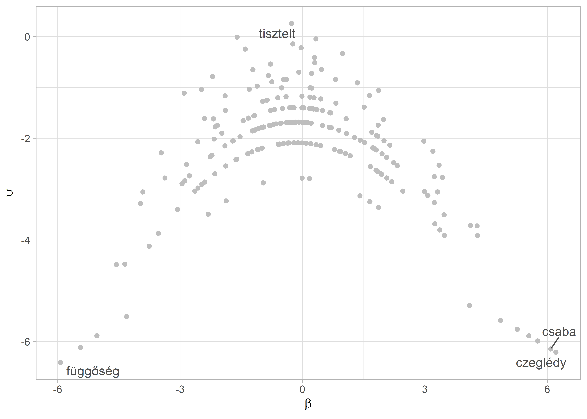
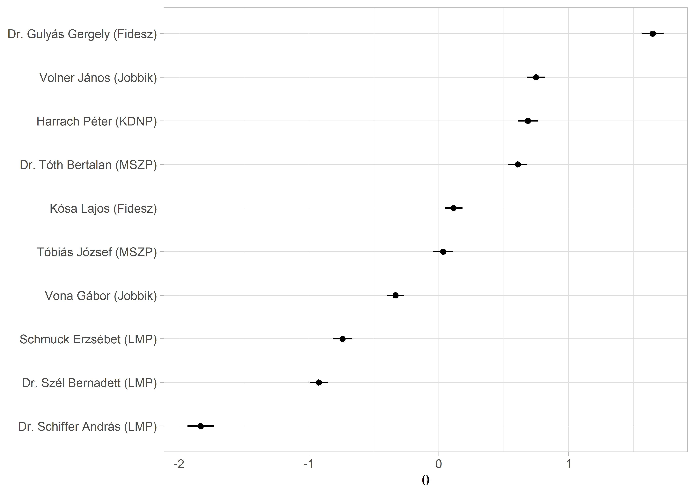

9 Szövegskálázás
9.1 Fogalmi alapok
A politikatudomány egyik izgalmas kérdése a szereplők ideológiai, vagy közpolitikai skálákon való elhelyezése. Ezt jellemzően pártprogramok vagy különböző ügyekkel kapcsolatos álláspontpontok alapján szokták meghatározni, de a politikusok beszédei is alkalmasak arra, hogy meghatározzuk a beszélő ideológiai hovatartozását. A szövegbányászat területén jellemzően a wordfish és a wordscores módszert alkalmazzák erre a feladatra. Míg előbbi a felügyelet nélküli módszerek sorába tartozik, utóbbi felügyelt módszerek közé.
A felügyelet nélküli wordfish módszer a skálázás során nem a referencia dokumentumokra támaszkodik, hanem olyan kifejezéseket keres a szövegben, amelyek megkülönböztetik egymástól a politikai spektrum különböző pontjain elhelyezkedő beszélőket. Az IRT-n (item response theory) alapuló módszer azt feltételezi, hogy a politikusok egy kevés dimenziós politikai térben mozognak, amely tér leírható az i politikus \(\theta_1\) paraméterével. Egy politikus (vagy párt) ebben a térben elfoglalt helyzete pedig befolyásolja a szavak szövegekben történő használatát. A módszer erőssége, hogy kevés erőforrás-befektetéssel megbízható becsléseket ad, ha a szövegek valóban az ideológiák mentén különböznek, tehát ha a szereplők erősen ideológiai tartalamú diskurzust folytatnak. Alkalmazásakor azonban tudnunk kell: a módszer nem képes kezelni, hogy a szövegek között nem csak ideológiai különbség lehet, hanem például stílusból és témából eredő eltérések is. Mivel a modell nem felügyelt, ezért nehéz garantálni, hogy valóban megbízhatóan azonosítja a szereplők elhelyezkedését a politikai térben, így az eredményeket mindenképpen körültekintően és alaposan kell validálni (Grimmer and Stewart 2013; Hjorth et al. 2015; Slapin and Proksch 2008).
A felügyelt wordscores a szótári módszerekhez hasonlóan a szövegeket a bennük található szavak alapján helyezi el a politikai térben oly módon, hogy a referenciadokumentumok szövegét használja tanító halmazként. A wordscores kiindulópontja, hogy pozíció pontszámokat kell rendelni referencia szövegekhez. A modell számításba veszi a szövegek szavainak súlyozott gyakoriságát és a pozíciópontszám, valamint a szógyakoriság alapján becsüli meg a korpuszban lévő többi dokumentum pozícióját (Laver, Benoit, and Garry 2003).
library(readr)
library(dplyr)
library(stringr)
library(ggplot2)
library(ggrepel)
library(quanteda)
library(quanteda.textmodels)
library(plotly)
library(HunMineR)A skálázási algoritmusokat egy kis korpuszon mutatjuk be. A minta dokumentumok a 2014–2018-as parlamenti ciklusban az Országgyűlésben frakcióvezető politikusok egy-egy véletlenszerűen kiválasztott napirend előtti felszólalásai. Ebben a ciklusban összesen 11 frakcióvezetője volt a két kormánypárti és öt ellenzéki frakciónak. 47 A dokumentumokon először elvégeztük a szokásos előkészítési lépéseket.
parl_beszedek <- HunMineR::data_parlspeakers_small
beszedek_tiszta <- parl_beszedek %>%
mutate(
text = str_remove_all(string = text, pattern = "[:cntrl:]"),
text = str_remove_all(string = text, pattern = "[:punct:]"),
text = str_remove_all(string = text, pattern = "[:digit:]"),
text = str_to_lower(text),
text = str_trim(text),
text = str_squish(text)
)A glimpse funkció segítségével ismét megtekinthetjük, mint az eredeti szöveget és a tisztított is, ezzel nem csak azt tudjuk ellenőrizni, hogy a tisztítás sikeres volt-e, hanem a metaadatokat is megnézhetjük, amelyek jelenesetben a felszólalás azonosító száma a felszólaló neve, valamint a pártja.
glimpse(parl_beszedek)
#> Rows: 10
#> Columns: 4
#> $ id <chr> "20142018_024_0002_0002", "20142018_055_0002_0002", "20142018_064_0002_0002", "20142018_115_0002_0002", "201420…
#> $ text <chr> "VONA GÁBOR (Jobbik): Tisztelt Elnök Úr! Tisztelt Országgyűlés! A tegnapi napon 11 helyen tartottak időközi önk…
#> $ felszolalo <chr> "Vona Gábor (Jobbik)", "Dr. Schiffer András (LMP)", "Dr. Szél Bernadett (LMP)", "Tóbiás József (MSZP)", "Schmuc…
#> $ part <chr> "Jobbik", "LMP", "LMP", "MSZP", "LMP", "MSZP", "Jobbik", "Fidesz", "KDNP", "Fidesz"
glimpse(beszedek_tiszta)
#> Rows: 10
#> Columns: 4
#> $ id <chr> "20142018_024_0002_0002", "20142018_055_0002_0002", "20142018_064_0002_0002", "20142018_115_0002_0002", "201420…
#> $ text <chr> "vona gábor jobbik tisztelt elnök úr tisztelt országgyűlés a tegnapi napon helyen tartottak időközi önkormányza…
#> $ felszolalo <chr> "Vona Gábor (Jobbik)", "Dr. Schiffer András (LMP)", "Dr. Szél Bernadett (LMP)", "Tóbiás József (MSZP)", "Schmuc…
#> $ part <chr> "Jobbik", "LMP", "LMP", "MSZP", "LMP", "MSZP", "Jobbik", "Fidesz", "KDNP", "Fidesz"A wordfish és wordscores algoritmus is ugyanazt a kiinduló korpuszt és dfm objektumot használja, amit a szokásos módon a quanteda csomag corpus() függvényével hozunk létre.
beszedek_corpus <- corpus(beszedek_tiszta)
summary(beszedek_corpus)
#> Corpus consisting of 10 documents, showing 10 documents:
#>
#> Text Types Tokens Sentences id felszolalo part
#> text1 442 819 1 20142018_024_0002_0002 Vona Gábor (Jobbik) Jobbik
#> text2 354 607 1 20142018_055_0002_0002 Dr. Schiffer András (LMP) LMP
#> text3 426 736 1 20142018_064_0002_0002 Dr. Szél Bernadett (LMP) LMP
#> text4 314 538 1 20142018_115_0002_0002 Tóbiás József (MSZP) MSZP
#> text5 354 589 1 20142018_158_0002_0002 Schmuck Erzsébet (LMP) LMP
#> text6 333 538 1 20142018_172_0002_0002 Dr. Tóth Bertalan (MSZP) MSZP
#> text7 344 559 1 20142018_206_0002_0002 Volner János (Jobbik) Jobbik
#> text8 352 628 1 20142018_212_0002_0002 Kósa Lajos (Fidesz) Fidesz
#> text9 317 492 1 20142018_236_0002_0002 Harrach Péter (KDNP) KDNP
#> text10 343 600 1 20142018_249_0002_0002 Dr. Gulyás Gergely (Fidesz) FideszA leíró statisztikai táblázatban látszik, hogy a beszédek hosszúsága nem egységes, a leghosszabb 819, a legrövidebb pedig 492 szavas. Az átlagos dokumentum hossz az 611 szó. A korpusz szemléltető célú, alaposabb elemzéshez hosszabb és/vagy több dokumentummal érdemes dolgoznunk.
A korpusz létrehozása után elkészítjük a dfm mátrixot, amelyből eltávolítjuk a magyar stopszvakat a HunMineR beépített szótára segítségével.
9.2 Wordfish
A wordfish felügyelet nélküli skálázást a quanteda.textmodels csomagban implementált textmodel_wordfish() függvény fogja végezni. A megadott dir = c(2, 1) paraméterrel a két dokumentum relatív \(\theta\) értékét tudjuk rögzíteni, mégpedig úgy hogy \(\theta_{dir1} < \theta_{dir2}\). Alapbeállításként az algoritmus az első és az utolsó dokumentumot teszi be ide. A lenti példánál mi a pártpozíciók alapján a Jobbikos Vona Gábor és az LMP-s Schiffer András egy-egy beszédét használtuk. A summary() használható az illesztett modellel, és a dokumentumonkénti \(\theta\) koefficienst tudjuk így megnézni.
beszedek_wf <- quanteda.textmodels::textmodel_wordfish(beszedek_dfm, dir = c(2, 1))
summary(beszedek_wf)
#>
#> Call:
#> textmodel_wordfish.dfm(x = beszedek_dfm, dir = c(2, 1))
#>
#> Estimated Document Positions:
#> theta se
#> text1 -0.3336 0.0334
#> text2 -1.8334 0.0518
#> text3 -0.9245 0.0356
#> text4 0.0332 0.0390
#> text5 -0.7420 0.0386
#> text6 0.6071 0.0373
#> text7 0.7474 0.0364
#> text8 0.1139 0.0351
#> text9 0.6854 0.0405
#> text10 1.6465 0.0426
#>
#> Estimated Feature Scores:
#> vona gábor jobbik tisztelt elnök országgyűlés tegnapi napon helyen tartottak időközi önkormányzati választásokat
#> beta -0.961 0.201 0.292 -0.268 -0.0345 -0.837 -1.11 -0.257 -0.882 -0.961 -0.961 -0.961 -0.961
#> psi -2.877 -2.106 -0.413 0.263 -0.2174 -0.770 -2.22 -1.682 -1.249 -2.877 -2.877 -2.877 -2.877
#> érdekelt recsken ózdon október nyertünk örömmel közlöm ország közvéleményével amúgy tudnak mindkét jobbikos polgármester
#> beta -0.961 -1.11 -1.16 -0.50 -0.961 -0.961 -0.961 -2.205 -0.961 -0.961 -0.404 -0.961 -0.961 -0.961
#> psi -2.877 -2.22 -1.84 -1.41 -2.877 -2.877 -2.877 -0.785 -2.877 -2.877 -1.690 -2.877 -2.877 -2.877
#> maradt tisztségében nemhogy
#> beta -0.961 -0.961 -1.89
#> psi -2.877 -2.877 -2.54Amennyiben szeretnénk a szavak szintjén is megnézni a \(\beta\) (a szavakhoz társított súly, ami a relatív fontosságát mutatja) és \(\psi\) (a szó rögzített hatást (word fixed effects), ami az eltérő szófrekvencia kezeléséért felelős) koefficienseket, akkor a beszedek_wf objektumban tárolt értékeket egy data frame-be tudjuk bemásolni. A dokumentumok hosszát és a szófrekvenciát figyelembe véve, a negatív \(\beta\) értékű szavakat gyakrabban használják a negatív \(\theta\) koefficienssel rendelkező politikusok.
szavak_wf <- data.frame(
word = beszedek_wf$features,
beta = beszedek_wf$beta,
psi = beszedek_wf$psi
)
szavak_wf %>%
arrange(beta) %>%
head(n = 15)
#> word beta psi
#> 1 függőség -5.93 -6.41
#> 2 paks -5.44 -6.11
#> 3 árnak -5.44 -6.11
#> 4 biztonsági -5.44 -6.11
#> 5 brüsszeli -5.04 -5.88
#> 6 helyzet -5.04 -5.88
#> 7 alsó -5.04 -5.88
#> 8 hangon -5.04 -5.88
#> 9 áram -5.04 -5.88
#> 10 ára -5.04 -5.88
#> 11 feltételezzük -5.04 -5.88
#> 12 ár -5.04 -5.88
#> 13 extra -5.04 -5.88
#> 14 tervezett -5.04 -5.88
#> 15 veszélybe -5.04 -5.88Ez a pozitív értékekre is igaz.
szavak_wf %>%
arrange(desc(beta)) %>%
head(n = 15)
#> word beta psi
#> 1 czeglédy 6.21 -6.21
#> 2 csaba 6.08 -6.14
#> 3 human 5.76 -5.99
#> 4 operator 5.76 -5.99
#> 5 zrt 5.54 -5.89
#> 6 fizette 5.26 -5.76
#> 7 gyanú 5.26 -5.76
#> 8 szocialista 5.26 -5.76
#> 9 elkövetett 4.85 -5.58
#> 10 tárgya 4.85 -5.58
#> 11 céghálózat 4.85 -5.58
#> 12 diákok 4.85 -5.58
#> 13 májusi 4.85 -5.58
#> 14 júniusi 4.85 -5.58
#> 15 büntetőeljárás 4.85 -5.58Az eredményeinket mind a szavak, mind a dokumentumok szintjén tudjuk vizualizálni. Elsőként a klasszikus „Eiffel-torony” ábrát reprodukáljuk, ami a szavak gyakoriságának és a skálára gyakorolt befolyásának az illusztrálására szolgál. Ehhez a már elkészült szavak_wf data framet-et és a ggplot2 csomagot fogjuk használni. Mivel a korpuszunk nagyon kicsi, ezért csak 2273 kifejezést fogunk ábrázolni. Ennek ellenére a lényeg kirajzolódik a lenti ábrán is.48
A dokumentumok szintjén is érdemes megvizsgálni az eredményeket. Ehhez a dokumentum szintű paramétereket fogjuk egy data frame-be gyűjteni: a \(\theta\) ideológiai pozíciót, illetve a beszélő nevét. A vizualizáció kedvéért a párttagságot is hozzáadjuk. A data frame összerakása után az alsó és a felső határát is kiszámoljuk a konfidencia intervallumnak és azt is ábrázoljuk (ld. 9.1. ábra).
Kihasználhatjuk, hogy a ggplot ábra definiálása közben a felhasznált bemeneti data frame-et különböző szempontok alapján lehet szűrni. Így ábrázolni tudjuk a gyakran használt, ám semleges szavakat (magas \(\psi\), alacsony \(\beta\)), illetve a ritkább, de meghatározóbb szavakat (magas \(\beta\), alacsony \(\psi\)).
ggplot(szavak_wf, aes(x = beta, y = psi)) +
geom_point(color = "grey") +
geom_text_repel(
data = filter(szavak_wf, beta > 4.5 | beta < -5 | psi > 0),
aes(beta, psi, label = word),
alpha = 0.7
) +
labs(
x = expression(beta),
y = expression(psi)
) Ábra 9.1: A wordfish ‘Eiffel-torony’
Az így kapott ábrán az egyes pontok mind egy szót reprezentálnak, láthatjuk, hogy tipikusan minél magasabb a \(\psi\) értékük annál inkább középen helyezkednek el hiszen a leggyakoribb szavak azok, amelyeket mindenki használ politikai spektrumon való elhelyezkedésüktől függetlenül. Az ábra két szélén lévő szavak azok, amelyek specifikusan a skála egy-egy végpontjához kötődnek. Jelen esetben ezek kevésbé beszédések, mivel a korpusz kifejezetten kis méretű és láthatóan további stopszavazás is szükséges.
dokumentumok_wf <- data.frame(
speaker = beszedek_wf$x@docvars$felszolalo,
part = beszedek_wf$x@docvars$part,
theta = beszedek_wf$theta,
theta_se = beszedek_wf$se.theta
) %>%
mutate(
lower = theta - 1.96 * theta_se,
upper = theta + 1.96 * theta_se
)
ggplot(dokumentumok_wf, aes(theta, reorder(speaker, theta))) +
geom_point() +
geom_errorbarh(aes(xmin = lower, xmax = upper), height = 0) +
labs(
y = NULL,
x = expression(theta)
) Ábra 9.2: A beszédek egymáshoz viszonyított pozíciója
A párt metaadattal összehasonlíthatjuk az egy párthoz tartozó frakcióvezetők értékeit a facet_wrap() használatával. Figyeljünk arra, hogy az y tengelyen szabadon változhasson az egyes rész ábrák között, a scales = "free" opcióval (ld. 9.2. ábra).
speech_df <- ggplot(dokumentumok_wf, aes(theta, reorder(speaker, theta))) +
geom_point() +
geom_errorbarh(aes(xmin = lower, xmax = upper), height = 0) +
labs(
y = NULL,
x = "theta"
) +
facet_wrap(~part, ncol = 1, scales = "free_y")
ggplotly(speech_df, height = 1000, tooltip = "theta")Ábra 9.3: Párton belüli pozíciók
9.3 Wordscores
A modell illesztést a wordfish-hez hasonlóan a quanteda.textmodels csomagban található textmodel_wordscores() függvény végzi. A kiinduló dfm ugyanaz, mint amit a fejezet elején elkészítettünk, a beszedek_dfm.
A referencia pontokat dokumentumváltozóként hozzáadjuk a dfm-hez (a refrencia_pont oszlopot, ami NA értéket kap alapértelmezetten). A kiválasztott referencia dokumentumoknál pedig egyenként hozzáadjuk az értékeket. Erre több megoldás is van, az egyszerűbb út, hogy az egyik és a másik végletet a -1; 1 intervallummal jelöljük. Ennek a lehetséges alternatívája, hogy egy külső, már validált forrást használunk. Pártok esetén ilyen lehet a Chapel Hill szakértői kérdőívének a pontszámai, a Manifesto projekt által kódolt jobb-bal (rile) dimenzió. A lenti példánál mi maradunk az egyszerűbb bináris kódolásnál (ld. 9.3. ábra). A wordfish eredményt alapul véve a két referencia pont Gulyás Gergely és Szél Bernadett beszédei lesznek.49 Ezek a 3. és a 10. dokumentumok. Miután a referencia pontokat hozzárendeltünk az adattáblához szintén a docvars funkcióval meg is tekinthetjük azt és láthatjuk, hogy a referenci_pont már a metaadatok között szerepel.
docvars(beszedek_dfm, "referencia_pont") <- NA
docvars(beszedek_dfm, "referencia_pont")[3] <- -1
docvars(beszedek_dfm, "referencia_pont")[10] <- 1
docvars(beszedek_dfm)
#> id felszolalo part referencia_pont
#> 1 20142018_024_0002_0002 Vona Gábor (Jobbik) Jobbik NA
#> 2 20142018_055_0002_0002 Dr. Schiffer András (LMP) LMP NA
#> 3 20142018_064_0002_0002 Dr. Szél Bernadett (LMP) LMP -1
#> 4 20142018_115_0002_0002 Tóbiás József (MSZP) MSZP NA
#> 5 20142018_158_0002_0002 Schmuck Erzsébet (LMP) LMP NA
#> 6 20142018_172_0002_0002 Dr. Tóth Bertalan (MSZP) MSZP NA
#> 7 20142018_206_0002_0002 Volner János (Jobbik) Jobbik NA
#> 8 20142018_212_0002_0002 Kósa Lajos (Fidesz) Fidesz NA
#> 9 20142018_236_0002_0002 Harrach Péter (KDNP) KDNP NA
#> 10 20142018_249_0002_0002 Dr. Gulyás Gergely (Fidesz) Fidesz 1A lenti wordscores-modell specifikáció követi a Laver, Benoit, and Garry (2003) tanulmányban leírtakat.
beszedek_ws <- textmodel_wordscores(
x = beszedek_dfm,
y = docvars(beszedek_dfm, "referencia_pont"),
scale = "linear",
smooth = 0
)
summary(beszedek_ws, 10)
#>
#> Call:
#> textmodel_wordscores.dfm(x = beszedek_dfm, y = docvars(beszedek_dfm,
#> "referencia_pont"), scale = "linear", smooth = 0)
#>
#> Reference Document Statistics:
#> score total min max mean median
#> text1 NA 411 0 6 0.181 0
#> text2 NA 341 0 5 0.150 0
#> text3 -1 383 0 6 0.168 0
#> text4 NA 289 0 5 0.127 0
#> text5 NA 321 0 8 0.141 0
#> text6 NA 298 0 5 0.131 0
#> text7 NA 307 0 5 0.135 0
#> text8 NA 354 0 8 0.156 0
#> text9 NA 250 0 3 0.110 0
#> text10 1 353 0 8 0.155 0
#>
#> Wordscores:
#> (showing first 10 elements)
#> tisztelt elnök országgyűlés ország nemhogy tette fidesz taps padsoraiban
#> -0.1027 0.3691 0.0408 -1.0000 -1.0000 -1.0000 1.0000 -1.0000 -1.0000
#> természetesen
#> 1.0000Az illesztett wordscores modellünkkel ezek után már meg tudjuk becsülni a korpuszban lévő többi dokumentum pozícióját. Ehhez a predict() függvény megoldását használjuk. A kiegészítő opciókkal a konfidencia intervallum alsó és felső határát is meg tudjuk becsülni, ami jól jön akkor, ha szeretnénk ábrázolni az eredményt.
beszedek_ws_pred <- predict(
beszedek_ws,
newdata = beszedek_dfm,
interval = "confidence")
beszedek_ws_pred <- as.data.frame(beszedek_ws_pred$fit)
beszedek_ws_pred
#> fit lwr upr
#> text1 -0.4585 -0.6883 -0.2287
#> text2 -0.2664 -0.4912 -0.0416
#> text3 -0.9448 -0.9660 -0.9236
#> text4 -0.3741 -0.6106 -0.1375
#> text5 -0.3197 -0.5520 -0.0874
#> text6 -0.0379 -0.3474 0.2715
#> text7 0.2343 -0.0316 0.5002
#> text8 -0.0575 -0.3298 0.2149
#> text9 0.0627 -0.2399 0.3653
#> text10 0.9448 0.9194 0.9703A kapott modellünket a wordfish-hez hasonlóan tudjuk ábrázolni, miután a beszedek_ws_pred objektumból adattáblát csinálunk és a ggplot2-vel elkészítjük a vizualizációt. A dokumentumok_ws két részből áll össze. Először a wordscores modell objektumunkból a frakcióvezetők neveit és pártjaikat emeljük ki (kicsit körülményes a dolog, mert egy komplexebb objektumban tárolja őket a quanteda, de az str() függvény tud segíteni ilyen esetekben). A dokumentumok becsült pontszámait pedig a beszedek_ws_pred objektumból készített data frame hozzácsatolásával adjuk hozzá a már elkészült data frame-hez. Ehhez a dplyr csomag bind_cols függvényét használjuk. Fontos, hogy itt teljesen biztosnak kell lennünk abban, hogy a sorok a két data frame esetében ugyanarra a dokumentumra vonatkoznak.
dokumentumok_ws <- data.frame(
speaker = beszedek_ws$x@docvars$felszolalo,
part = beszedek_ws$x@docvars$part
)
dokumentumok_ws <- bind_cols(dokumentumok_ws, beszedek_ws_pred)
dokumentumok_ws
#> speaker part fit lwr upr
#> text1 Vona Gábor (Jobbik) Jobbik -0.4585 -0.6883 -0.2287
#> text2 Dr. Schiffer András (LMP) LMP -0.2664 -0.4912 -0.0416
#> text3 Dr. Szél Bernadett (LMP) LMP -0.9448 -0.9660 -0.9236
#> text4 Tóbiás József (MSZP) MSZP -0.3741 -0.6106 -0.1375
#> text5 Schmuck Erzsébet (LMP) LMP -0.3197 -0.5520 -0.0874
#> text6 Dr. Tóth Bertalan (MSZP) MSZP -0.0379 -0.3474 0.2715
#> text7 Volner János (Jobbik) Jobbik 0.2343 -0.0316 0.5002
#> text8 Kósa Lajos (Fidesz) Fidesz -0.0575 -0.3298 0.2149
#> text9 Harrach Péter (KDNP) KDNP 0.0627 -0.2399 0.3653
#> text10 Dr. Gulyás Gergely (Fidesz) Fidesz 0.9448 0.9194 0.9703A 9.4-es ábrán a párton belüli bontást illusztráljuk a facet_wrap() segítségével.
party_df <- ggplot(dokumentumok_ws, aes(fit, reorder(speaker, fit))) +
geom_point() +
geom_errorbarh(aes(xmin = lwr, xmax = upr), height = 0) +
labs(
y = NULL,
x = "wordscores"
) +
facet_wrap(~part, ncol = 1, scales = "free_y")
ggplotly(party_df, height = 1000, tooltip = "fit")Ábra 9.4: A párton belüli wordscores-alapú skála
A mintába nem került be Rogán Antal, akinek csak egy darab napirend előtti felszólalása volt.↩︎
A
quanteda.textplotscsomag több megoldást is kínál az ábrák elkészítésére. Mivel ezek a megoldások kifejezetten a quanteda elemzések ábrázolására készültek, ezért rövid egysoros függvényekkel tudunk gyorsan ábrákat készíteni. A hátrányuk, hogy kevésbé tudjuk „személyre szabni” az ábráinkat, mint aggplot2példák esetében. Aquanteda.textplotsmegoldásokat ezen a linken demonstrálják a csomag készítői: https://quanteda.io/articles/pkgdown/examples/plotting.html.↩︎Azért nem Vona Gábor beszédét választottuk, mert az gyaníthatóan egy kiugró érték, ami nem reprezentálja megfelelően a sokaságot.↩︎